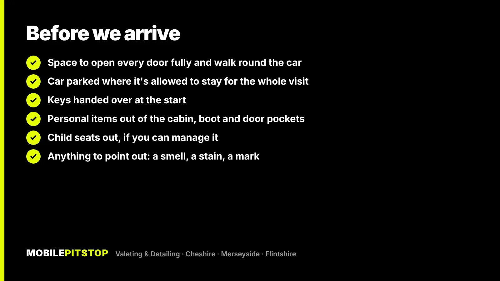
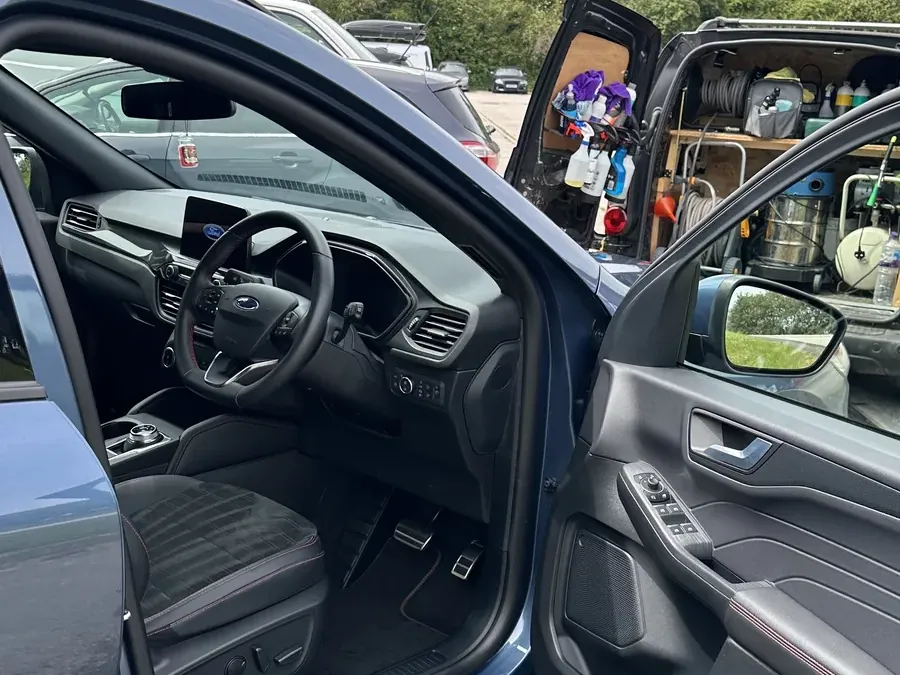
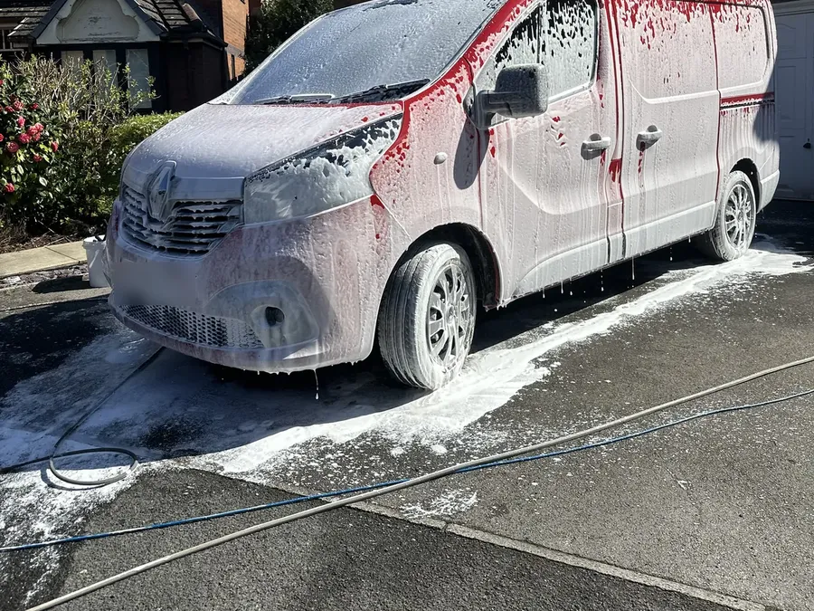

For a mobile valet at your home, we mostly need three things: room to work all the way round the car, a spot where it can stay parked for the whole visit, and the car emptied of personal bits. Get those right and the clean takes care of itself.
We come to your home or workplace, roughly within 20 miles of Ellesmere Port, and bring the kit for the job in the van.
Below is what helps on the day, what to do if you've no driveway, how weather plays into it, and which jobs we do at our unit in Birkenhead instead.
Most of this is common sense, but each point makes a real difference to how thorough the clean can be.
An Interior Deep Clean starts with compressed air through the seat rails, joins and vents, then a deep vacuum of the seats, carpets, mats, boot and edges. To reach the rails and the bottom of the door shuts properly, the doors need to open all the way, not halfway against a wall or a hedge. On the outside, we need to walk round the whole car with the wash kit.
If the car usually sits tight against a fence or next to another car, moving it a metre or two the night before is the single most useful thing you can do.
Your own driveway is the easiest option. A workplace car park also works well, as long as the car can stay in the space for the whole visit. If you park on the street or in a shared car park, see the section further down.
We need the keys to open the boot, move the seats and get into every corner. Hand them over when we arrive, and a minute at the start is also the best time to point out anything specific: a smell you want gone, a stain on a seat, a mark you're not sure about.
Clear out the door pockets, glovebox, centre console, seat-back pockets and boot. We can work round a few things, but personal items get in the way of the vacuum and the steam, and you'll get a better clean without them. If there are child seats fitted and you're comfortable taking them out, do. Underneath them is usually where the crumbs and spills have built up.

The van carries the kit for the job, so you're not lending us your hoover or your buckets. On a typical visit that includes:

If you have a question about your particular spot before booking, just ask. It's quicker to sort out on the phone than on the day.
Not everyone has a driveway, especially in terraced streets on the Wirral and in Liverpool. It can still work, but it helps to think about a few things first:
If you're not sure, send us a couple of photos of where the car is parked in daylight, along with the car itself. We'll tell you straight whether it'll work.

Light rain doesn't stop most interior work, and plenty of exterior washing happens on grey, damp days in the North West. What matters more is the step being done:
If you're worried about the forecast for your booking, get in touch before the day and we'll talk it through.
The mobile services run from a quick maintenance clean up to a full reset of the car:
Booking is online: you pick a service, answer a few questions about the car, and choose a time. If you're torn between two, send a few photos in daylight and we'll tell you straight which one the car needs, including when the cheaper one will do. Our guide to the difference between a valet and a detail explains the full range.
Some work needs a controlled indoor space, so it's done at our unit in Birkenhead rather than on your drive. These are all by quote:
Everything else on our services list comes to you.